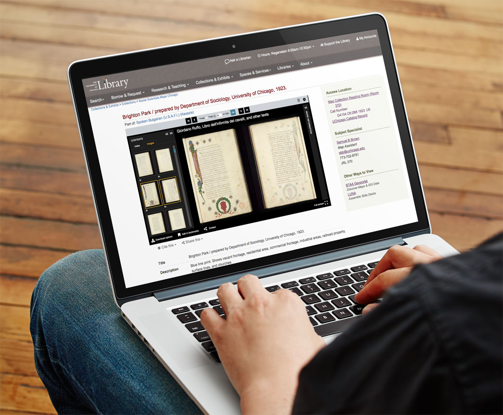

University of Chicago Library Exhibit & Collection Integration
Template redesign, data integration, and staff training.
IIIf and Universal Viewer are utilized for page-turning, zooming, and downloads

User flow to capture the journey from collections, objects, and exhibits.
Problem
Online exhibits were one-off microsites that involved creating new templates for each exhibit. This required expansive developer time, made the curators feel helpless in the creation of their exhibit, and resulted in incongruities between exhibits. Collections were of a same unique and siloed affair, not letting users see the full breadth of the University's collections.
Information between collection and exhibits was also siloed, not allowing connections between related materials.
Dynamic relationships are created between collections and exhibits and automatically populated by matching the subject assignments.
Enabling user exploration via the sidebar browse, allows navigation through related subject materials without limitations.
Using Sass shade and tint variations, the curator is able to input one color hex in the CMS form and the Sass code will produce a color scheme for the entire web exhibit.
Sass-powered dynamic styling allows for each exhibit to have a unique look, while maintaining the Library's branding and style guidelines.
Developer led training sessions, clear documentation, and workshops gave Curators and Librarians confidence in creating their own web exhibits and digital collections using the new templates.
Impact
The easier to use templates, simplified design creation, and training sessions helped make the curators feel empowered to create their online exhibits are they wanted.
Creating subject snippets as the connection between collections and exhibits has increased cross-material browsing on the website. It also showcases the diversity of the Library's collections.